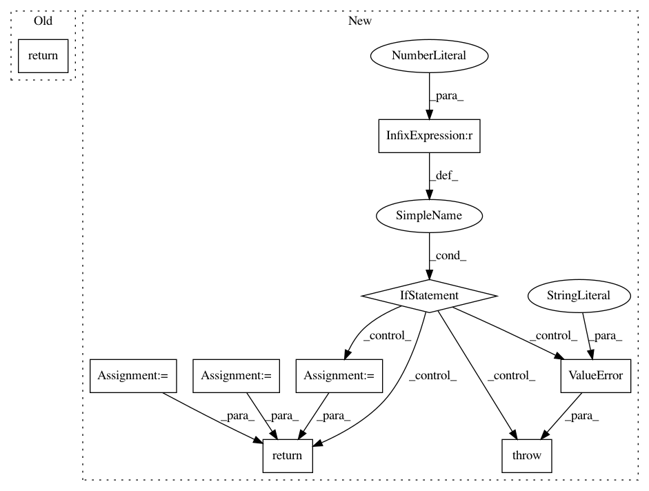

e0df81789b43a95c32a8aa9e6ce64baba216c5fe,dataset/batch_image.py,BaseImagesBatch,rotate,#BaseImagesBatch#Any#Any#Any#Any#,196
Before Change
(always True for images as arrays, can be False for PIL.Images)
return self._rotate_image(self.get(ix, components), angle, preserve_shape, **kwargs)
@action
@inbatch_parallel(init="indices", post="assemble")
def random_rotate(self, ix, components="images", p=1., angle=None, **kwargs):
After Change
angle"s range to sample from in the form of (min_angle, max_angle), in degrees.
if float is passed than determenistic rotation will be perfomed
if p > 1 or p < 0:
raise ValueError("probability must be in [0,1]")
image = self.get(ix, components)
if np.random.random() < p:
angle = angle or (-45., 45.)
if not isinstance(angle, (float, int)):
angle = np.random.uniform(*(angle))
preserve_shape = kwargs.pop("preserve_shape", True)
return self._rotate_image(image, angle, preserve_shape=preserve_shape, **kwargs)
return image
@action
In pattern: SUPERPATTERN
Frequency: 3
Non-data size: 9
Instances
Project Name: analysiscenter/batchflow
Commit Name: e0df81789b43a95c32a8aa9e6ce64baba216c5fe
Time: 2017-12-15
Author: g.ivanov@analysiscenter.ru
File Name: dataset/batch_image.py
Class Name: BaseImagesBatch
Method Name: rotate
Project Name: scikit-image/scikit-image
Commit Name: f966ef79ae7c47b93029e065b3ee6686bab5bff7
Time: 2017-03-29
Author: jirka.borovec@seznam.cz
File Name: skimage/measure/fit.py
Class Name: LineModel
Method Name: predict_x
Project Name: scikit-image/scikit-image
Commit Name: f966ef79ae7c47b93029e065b3ee6686bab5bff7
Time: 2017-03-29
Author: jirka.borovec@seznam.cz
File Name: skimage/measure/fit.py
Class Name: LineModel
Method Name: predict_y